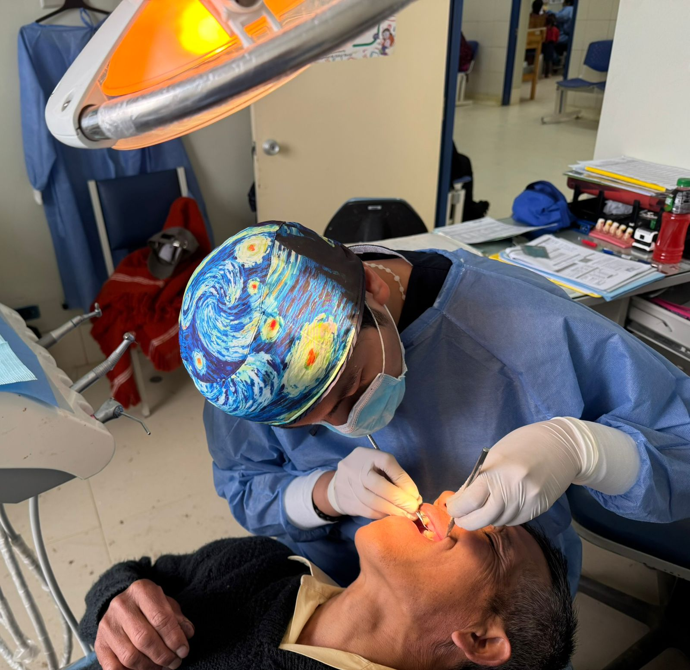

ODONTOMASTER
 Reservar Cita
Reservar Cita
Reservar Cita
Reservar Cita

Odontólogo Especialista en Implantología, Rehabilitación Oral y Periodoncia. Más de 27 años de experiencia en colocación y rehabilitación de implantes, procedimientos de regeneración ósea, elevación de piso de seno maxilar y manejo de tejidos periodontales. Conferencista nacional e internacional en implantología oral y docente de grupos internacionales especializados en colocación de implantes y regeneración ósea.
Odontólogo General - Escuela Colombiana de Medicina.
Prótesis Periodontal - Universidad Central de Venezuela.
Advanced Implant Dentistry - University of Tel-Aviv.
Clinician Program in Implant Dentistry - Universidad de California.